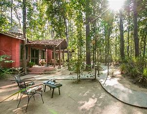
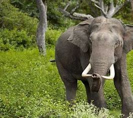
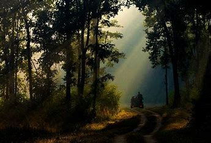
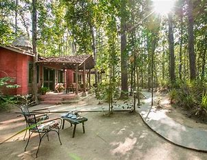
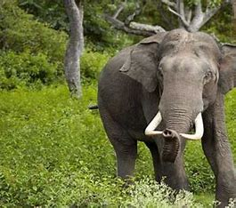
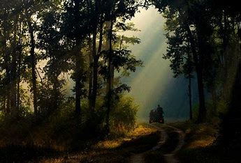
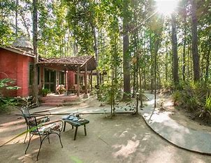
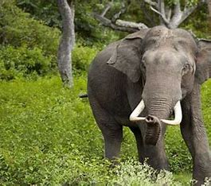
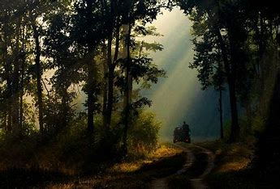

Kanha Tiger Reserve, also known as Kanha–Kisli National Park, is one of the tiger
reserves of India and the largest national park of the state of Madhya Pradesh. The present-day Kanha area
is divided into two protected areas, Hallon and Banjar, of 250 and 300 km2 (97 and 116 sq mi), respectively.
Kanha National Park was created on 1 June 1955 and was designated a tiger reserve in 1973. Today, it
encompasses an area of 940 km2 (360 sq mi) in the two districts Mandla and Balaghat.
Together with a surrounding buffer zone of 1,067 km2 (412 sq mi) and the neighbouring 110 km2 (42 sq mi)
Phen Sanctuary, it forms the Kanha Tiger Reserve, which is one of the biggest in the country.This
makes it the largest national park in central India.
The park hosts Bengal tiger, Indian leopard, sloth bear, barasingha and dhole. It is also the first tiger
reserve in India to officially introduce a mascot, Bhoorsingh the Barasingha.Kanha Tiger Reserve is home to
over 1000 species of flowering plants.The lowland forest is a mixture of sal (Shorea robusta) and other
mixed-forest trees, interspersed with meadows. The highland forests are tropical moist, dry deciduous type
and of a completely different nature from bamboo (Dendrocalamus strictus) on slopes. A notable Indian ghost
tree (Davidia involucrata) can also be seen in the dense forest.Kanha Tiger Reserve hosts populations of
Bengal tiger, Indian leopard, dhole, sloth bear, Bengal fox and Indian jackal. The barasingha is adapted to
swampy areas. The gaur inhabits meadows and waterholes in the park.Blackbuck has become very rare.
Neelam's cubs in action (Kanha zone)
The reserve hosts around 300 species of birds and the most commonly seen birds are the black ibis, Asian
green bee-eater, cattle egret, blossom-headed parakeet, Indian pond heron, drongo, common teal, crested
serpent eagle, Indian grey hornbill, Indian roller, lesser adjutant, little grebe, lesser whistling teal,
minivet, Malabar pied hornbill, woodpeckers, pigeon, paradise flycatcher, hill myna, Indian peafowl, red
junglefowl, red-wattled lapwing, steppe eagle, Tickell's blue flycatcher, white-eyed buzzard, white-breasted
kingfisher, white-browed fantail, wood shrikes, warblers, and vultures among many more.An exciting
conservation effort in this national park is the reintroduction of barasingha. The gaur will be relocated to
Bandhavgarh and some barasingha will be relocated to Satpura Tiger Reserve. The objective of this project is
to introduce about 500 barasingha in this national park to eight or nine different locations. There is also
a project to capture about twenty tigers and relocate them to Satpura Tiger Reserve.Members of the Baiga
tribe, a semi-nomadic tribe of central India that is reliant on the forest, lived in 28 villages that had
been within the Kanha National Park until 1968, when they were relocated. The relocation was part of an
effort to maintain a critical tiger habitat.The land to which they were relocated is barren and they
now suffer from alcoholism and malnourishment, and beg to support themselves.The last of the villages
to be relocated for the tiger habitat is in the core zone of the Kanha Tiger Reserve.The area is the
ancestral home of the Gond and Baiga tribes. In January 2010, Baiga tribe were illegally evicted from the
park without proper compensation from the government, according to Survival International.
In its efforts to maintain and restore tiger habitats, WWF-India has worked to create corridors that support
the tigers and their prey, thereby stabilizing the tiger population. This includes efforts to prevent loss
of life or property of humans, reduce human dependency on the forest, and reduce retaliatory killings of
tigers when people have experienced losses.
However, Kanha's frontline staff continue to receive support, training and equipment from WWF, even as they
carry out the eviction of the 22,000 residents who are to be forcibly resettled from tiger reserves in the
region.The Jabalpur Airport 175 km (109 mi) / 04:30hrs) has direct flights to and from Delhi, Mumbai,
Kolkata, Hyderabad, Pune, Belgaum and Bhopal, with AirIndia, SpiceJet and IndiGo operating daily flights.
Nagpur (Mukki 240 km (150 mi) and Raipur (Mukki 185 km (115 mi)) have other airports.
Jabalpur is a major railway stations with train connectivity across India. From Jabalpur, the best way to
travel is via Mandla, which has a tourist taxi service to the park, and one can reach up to Chiraidongri the
newly added Broad Gauge station[15] via Jabalpur, Nainpur railway route to enter national park through Kanha
gate. In pre-planned journey one of shortest road route is Jabalpur-Bargi Dam-Ganhsor-Thanwar
Dam-Chiraidongri-Kanha National Park. Other route Jabalpur to Mandla (via NH-30)-Chiraidongri- Kanha route
is preferred when arrival permission is to be taken from National Park authority at Mandla. This National
Park can also be approached from Raipur - Gandai - Malanjkhand - Baihar highway route via Mukki Gate to
National Park. M.P. Tourism and Private owners has hotels, resorts near to Mukki Gate. Similar stay
facilities is also available at Khatia and Kanha Gate.
There are three gates for entrance into the park. The Kanha/Kisli gate is best accessed from Jabalpur and
stops at the village Khatia, inside the buffer area. The second gate is at Mukki and the third, most
recently opened, gate is at Sarhi.


